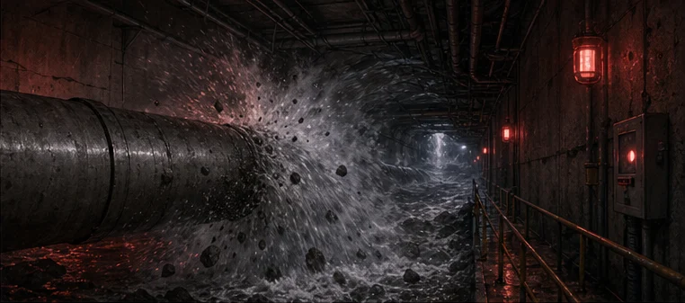

SCRIPTED INCIDENT OPERATOR｜同室三人
海岬防洪站
主電力與中央遙測中斷。三位應變人員接上不同備援鏈路；岬衛-7 只播報已有資料，最後決定仍由你們做。
你們是同一隊。相關資訊都可以分享；每人只能完成一項角色診斷。
建立三支角色連結
數位事件操作員
岬衛-7
共同播報、倒數、固定問答與事件轉場。它不讀心、不預測，也不替隊伍選答案。
共同序章｜六格現場
先知道你們接手了什麼
三人一起看完，再各自打開同一事件的角色連結。

18:40｜人員就位
林芮進入西側維修隧道；高承在東閘檢查手動撐架。主系統正常。

18:47｜進水管破裂
海水衝入設施，主電力與中央遙測同時失效。

西側｜林芮失聯
穿戴頻道仍有回傳，但時間、位置與路線都未確認。

東閘｜高承留守
他必須守住手動撐點，控制廊才能維持隔離。
18:48｜你們接手
三支手機接到同一事件，各自保管一種診斷能力。

每人只剩一次診斷
六個未知只能查三個。先規劃，再決定要留下哪些空白。
同一事件種子｜不需要帳號
把三支角色連結分給隊友
三條連結帶著同一事件碼。事件碼相同，三支手機得到的事故真相就相同。
本次事件碼——
三人同室、一人一機。選不同角色；讀完自己的資訊後直接開口交換。共享語音只在其中一支手機開啟即可。